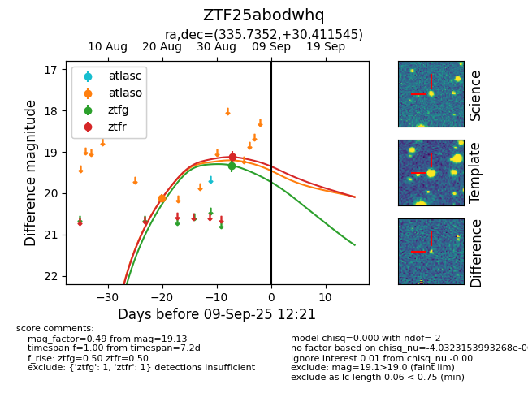

FINK: ZTF25abodwhq
Lasair: ZTF25abodwhq
ALeRCE: ZTF25abodwhq
ZTF25abodwhq (ztf,fink)
equatorial (ra, dec) = (335.7352,+30.41154)
galactic (l, b) = (88.6680,-22.40528)

last atlaso=20.13, ztfg=19.33, ztfr=19.13
1 atlaso, 1 ztfg, 1 ztfr detections